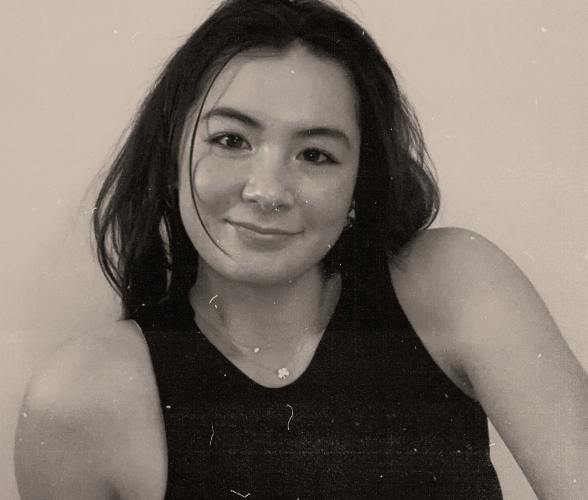
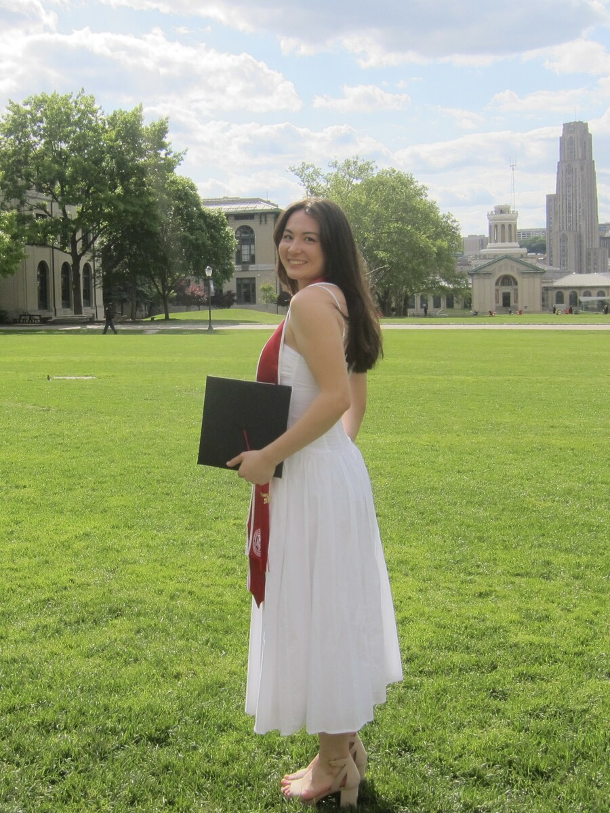

I'm Cassie, a Carnegie Mellon graduate with dual degrees in Systems Design and Violin Performance. Growing up in the Bay Area, I was surrounded by the energy of both tech innovation and a vibrant arts community, two worlds I'm excited to contribute to and bring together.
My work spans digital marketing, data analysis, and project management. Outside of work, you'll find me playing soccer, rock climbing, running, and exploring whatever creative project catches my attention.

